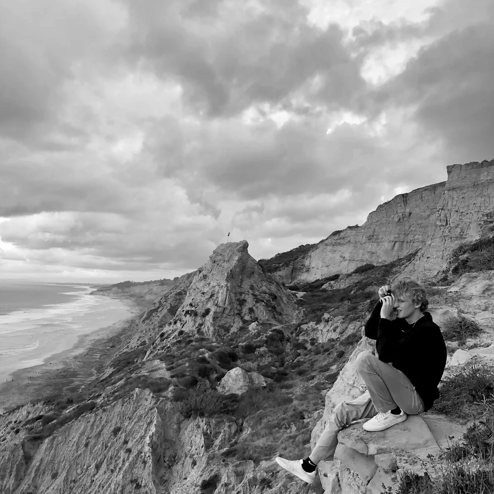
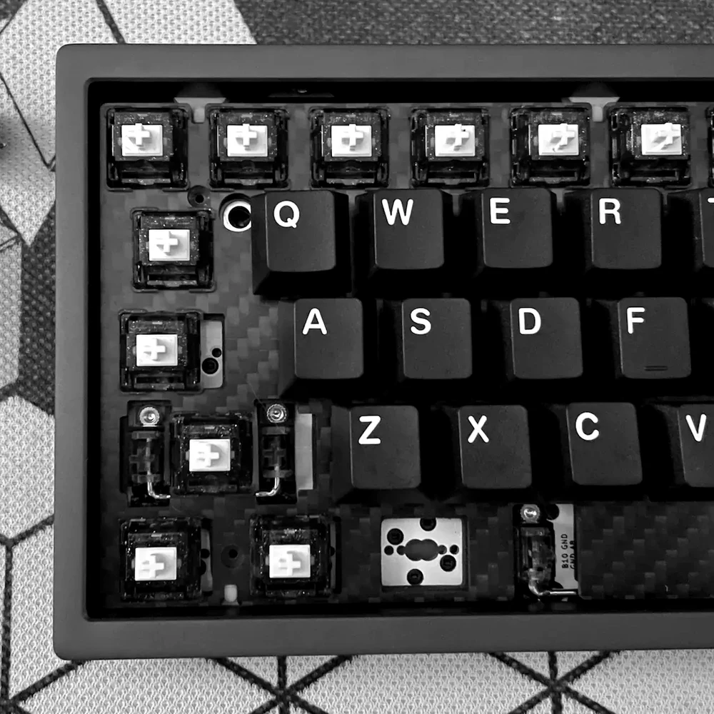
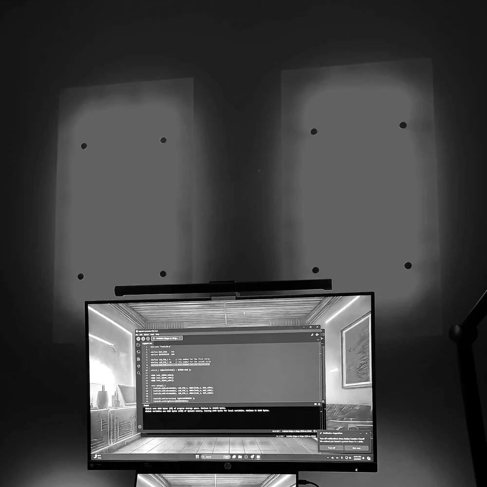

About Me
I'm a product designer who's happiest when I'm building something end-to-end. Whether that's a product flow, a home server rack, or an LED wall installation wired up to react to whatever I'm listening to that week. Outside of design work, you'll usually find me carving up an autocross course, chasing a better golf swing, or down a rabbit hole with a soldering iron and way too many mechanical keyboard switches on my desk. I like systems, the kind you design on screen and the kind you build with your hands, and I'm pretty bad at leaving a good idea half-finished.

California
San Diego
Autocross
Milwaukee

Keyboard Build
MODE

LED Wall
Music-Reactive · MP3 Jack